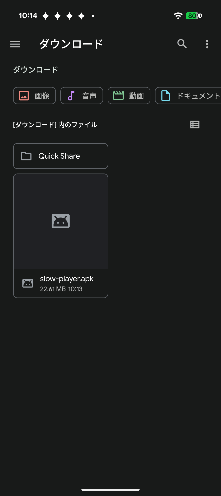
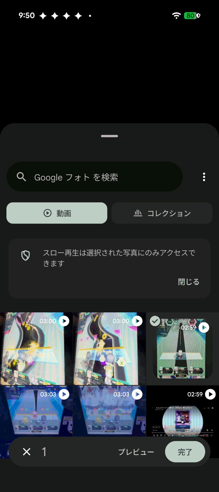
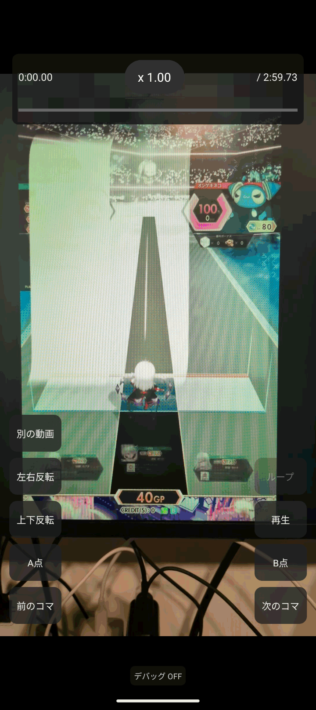
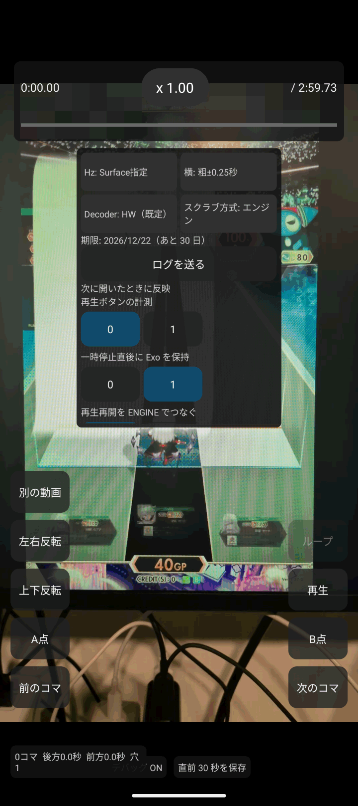

スロー再生（試験版）の入れ方と使い方
アプリをダウンロードはじめに
- 音ゲーなどのプレー動画を、1 コマずつ・ゆっくり見返すための Android アプリです。今は試験版です。
- Android 7.0 以降のスマホで使えます。iPhone 版はまだありません。
1. 入れる
-
下のボタンからアプリのファイル（APK、約 24MB）をダウンロードします。
アプリをダウンロード -
ダウンロードが終わったら、通知か「ファイル」アプリの「ダウンロード」から
slow-player.apkを開きます。
ダウンロードにある APK - 「この提供元のアプリを許可」などの画面が出たら、オンにして戻ります（ブラウザやファイルアプリに、アプリを入れる許可を出す画面です）。
- 「インストール」を押します。
- 「Play プロテクト」の警告が出ることがあります。ストアを通していないアプリに出るものです。「詳細」→「インストールする」で進めます。
画面の文言や見た目は、スマホのメーカー（Pixel・Galaxy・AQUOS など）で少し違います。分からなければ、このページを教えてくれた人に聞いてください。
2. 使い方
「動画を選ぶ」を押して、見たい動画を選びます。

画面の操作

| 操作 | 動き |
|---|---|
| 横にスワイプ（画面の上の方から） | 大きく動く（画面の幅で 20 秒） |
| 横にスワイプ（真ん中から） | 普通に動く（画面の幅で 4 秒） |
| 横にスワイプ（下の方から） | 1 コマずつ動く |
| 縦にスワイプ | 上で速く、下でゆっくり（0.1〜2 倍）。上の速度表示を押すと 1 倍に戻る |
| 「前のコマ」「次のコマ」 | 1 コマずつ。押し続けると連続で進む |
| 「A点」「B点」→「ループ」 | A と B の間を繰り返す |
| 左右反転 | 映像を反転して表示する（鏡のように見たいとき） |
| 上下反転 | 映像を反転して表示する（鏡のように見たいとき） |
| 映像をタップ | ボタンを隠す・出す |
再生中に横スワイプして指を離すと、そのまま再生に戻ります。
動画を開いた直後は「準備中」と出ます。その間は 1 コマずつの操作が使えません（数秒で終わります）。
3. 試してほしいこと
自分で撮ったプレー動画（いつも見返している動画）で、普段どおり使ってみてください。
特に見てほしいところ
- 再生中に横スワイプして指を離したあと、すぐ再生に戻るか（引っかかる・止まる感じがないか）
- 音が映像に遅れて戻ってこないか
- 1 コマずつ動かしたとき、飛んだり戻ったりしないか
- 長い動画（10 分以上）、60fps の動画、HDR で撮った動画でも同じように動くか
- 落ちる・固まる・真っ黒になることがないか
4. 教えてほしいこと
- 気になったこと（いつ・どの動画で・何をしたら・どうなったか）や、よかった点があれば、このページを教えてくれた人に LINE などで教えてください。
- スマホの機種や動画の形式は、ログで自動的に届くので送らなくて大丈夫です。
5. 困ったことが起きたら（ログ）
アプリの中の記録（ログ）は、自動で開発者に届きます（動画を閉じたとき・別の動画を選んだとき・アプリを閉じたときに送られます。最初に開いたときに説明が出ます）。動画そのもの・動画のファイル名・保存場所は送られません。
-
不具合が起きて、すぐ送りたいとき: 映像をタップしてボタンを出し、一番下の「デバッグ」→「ログを送る」。動画を選ぶ前の画面にもあります。

デバッグボタン - 自動で送ってほしくないとき: 「デバッグ」の中の「ログを自動で送る」をオフにします。
- 最初の画面のニックネームを入れておくと、誰のログか分かって助かります（入れなくても使えます）。
- 動きがおかしいときは、スマホの「画面録画」で撮った映像を、このページを教えてくれた人に送ってもらえると、とても助かります。
- 2026-11-23 の版から再生のしくみが新しくなりました。再生がおかしい（止まる・音がずれる・黒くなる）ときは、「デバッグ」の中の「再生方式」で「EXO」（前のしくみ）を選び、動画を選び直すと前と同じ動きに戻せます。そのときは、何が起きたかも教えてください。
6. 容量について
- アプリ本体は約 24MB（入れたあとの大きさ。Pixel 10a の「アプリ情報」で 24.14MB）。
- 動画を開くと、なめらかに動かすための作業用ファイルを作ることがあります（3 分の動画で約 400MB、合計で最大 2GB）。
- 消したいときは、「デバッグ」の中の「変換版を全削除」を押すか、スマホの設定 → アプリ → スロー再生 → ストレージ →「ストレージを消去」。
7. 新しい版にするとき
- このページの「アプリをダウンロード」から同じ手順で入れます。上書きされ、設定は残ります。
- 2026-11-23 の版で変わったこと: 再生のしくみを自作のものに替えました。再生中にスワイプして指を離したあと、前より早く再生に戻ります。A-B ループのつなぎ目や、速さを変えたときの切り替えもなめらかになりました。HDR で撮った動画や 240fps の動画は、今までどおりのしくみで再生します。
8. 消すとき
スマホの設定 → アプリ → スロー再生 →「アンインストール」。作業用ファイルも一緒に消えます。